Income and race/ethnicity
Some numbers
| demo | Week 1 | Week 10 | Week 11 | Week 12 | Week 13 | Week 14 | Week 15 | Week 16 | Week 17 | Week 18 | Week 19 | Week 2 | Week 20 | Week 21 | Week 22 | Week 23 | Week 24 | Week 25 | Week 26 | Week 27 | Week 28 | Week 29 | Week 3 | Week 30 | Week 31 | Week 32 | Week 33 | Week 34 | Week 35 | Week 4 | Week 5 | Week 6 | Week 7 | Week 8 | Week 9 | Total |
|---|---|---|---|---|---|---|---|---|---|---|---|---|---|---|---|---|---|---|---|---|---|---|---|---|---|---|---|---|---|---|---|---|---|---|---|---|
| African American, high income | 13 | 4 | 3 | 3 | 7 | 5 | 6 | 6 | 1 | 20 | 1 | 5 | 6 | 6 | 2 | 1 | 3 | 18 | 18 | 2 | 2 | 2 | 28 | 15 | 33 | 9 | 3 | 5 | 15 | |||||||
| African American, low income | 15 | 2 | 5 | 17 | 24 | 13 | 12 | 13 | 13 | 4 | 6 | 18 | 8 | 9 | 6 | 12 | 13 | 3 | 10 | 3 | 11 | 20 | 8 | 12 | 3 | 28 | 30 | 59 | 5 | 3 | 3 | 6 | 1 | 10 | ||
| All caregivers | 299 | 163 | 171 | 165 | 248 | 239 | 147 | 167 | 181 | 112 | 147 | 407 | 220 | 211 | 98 | 150 | 164 | 175 | 201 | 338 | 72 | 380 | 316 | 375 | 553 | 242 | 643 | 433 | 931 | 190 | 125 | 93 | 149 | 112 | 250 | 8867 |
| Latinx, high income | 15 | 11 | 15 | 11 | 27 | 9 | 13 | 13 | 11 | 2 | 23 | 18 | 10 | 27 | 5 | 13 | 8 | 10 | 7 | 21 | 2 | 17 | 13 | 9 | 38 | 5 | 54 | 64 | 17 | 5 | 6 | 15 | 9 | 28 | ||
| Latinx, low income | 26 | 17 | 13 | 14 | 38 | 16 | 20 | 22 | 20 | 7 | 21 | 36 | 22 | 23 | 4 | 17 | 24 | 22 | 10 | 27 | 3 | 29 | 22 | 22 | 34 | 10 | 55 | 67 | 10 | 7 | 5 | 10 | 9 | 21 | ||
| POC, high income | 36 | 22 | 25 | 23 | 44 | 18 | 26 | 21 | 30 | 3 | 33 | 57 | 15 | 41 | 7 | 25 | 20 | 22 | 12 | 33 | 5 | 50 | 40 | 24 | 83 | 15 | 105 | 53 | 157 | 35 | 9 | 8 | 18 | 16 | 51 | 1182 |
| POC, low income | 51 | 27 | 23 | 40 | 74 | 39 | 39 | 47 | 38 | 16 | 31 | 68 | 28 | 38 | 18 | 35 | 48 | 41 | 18 | 44 | 7 | 45 | 47 | 40 | 63 | 18 | 101 | 74 | 156 | 16 | 15 | 8 | 19 | 13 | 39 | 1424 |
| White, high income | 68 | 38 | 43 | 34 | 28 | 20 | 34 | 37 | 57 | 41 | 50 | 128 | 63 | 58 | 23 | 49 | 23 | 72 | 56 | 140 | 20 | 176 | 113 | 111 | 266 | 121 | 293 | 385 | 69 | 39 | 29 | 39 | 25 | 55 | ||
| White, low income | 67 | 34 | 45 | 25 | 29 | 28 | 33 | 45 | 34 | 32 | 31 | 91 | 86 | 60 | 29 | 36 | 46 | 37 | 89 | 120 | 35 | 106 | 64 | 157 | 141 | 73 | 141 | 189 | 40 | 26 | 23 | 35 | 26 | 36 |
Access to health care
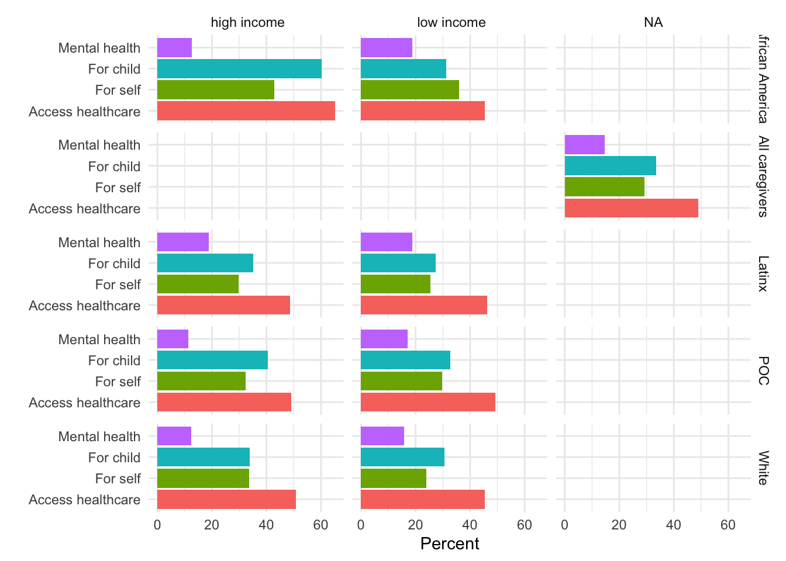
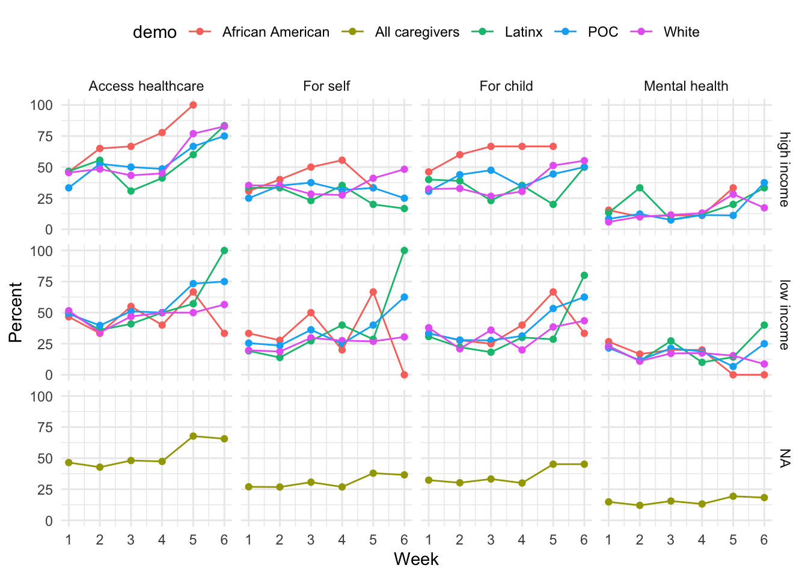
Missesd well-baby
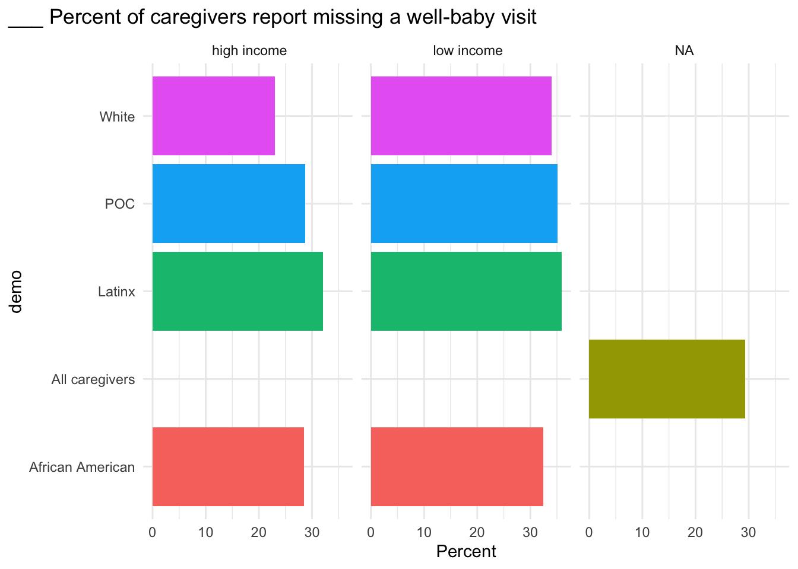
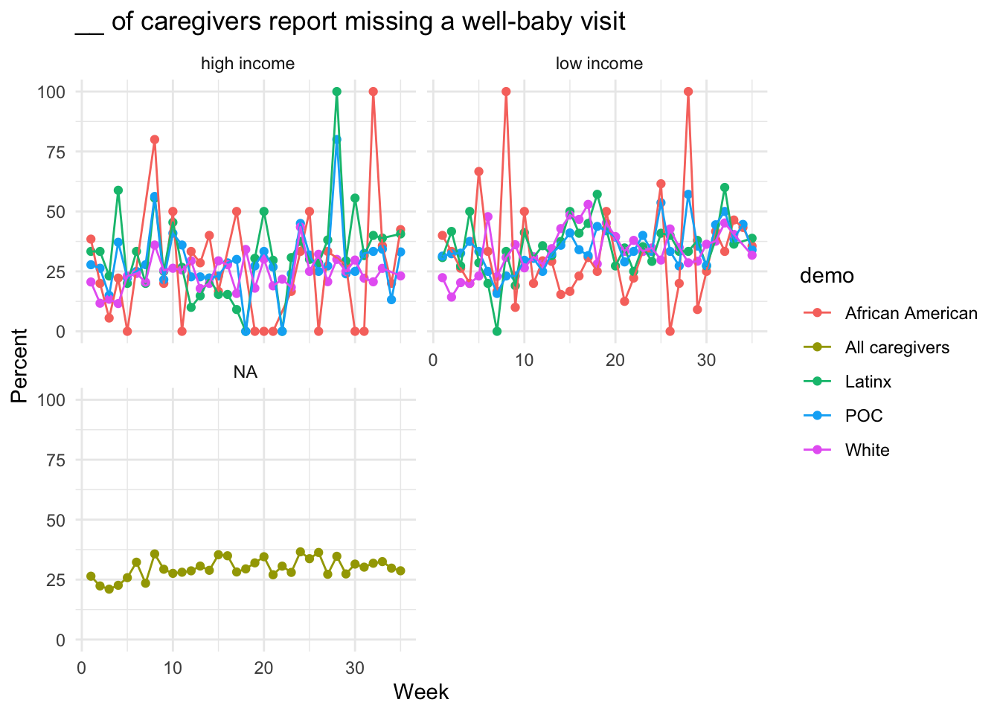
Which visit missed?
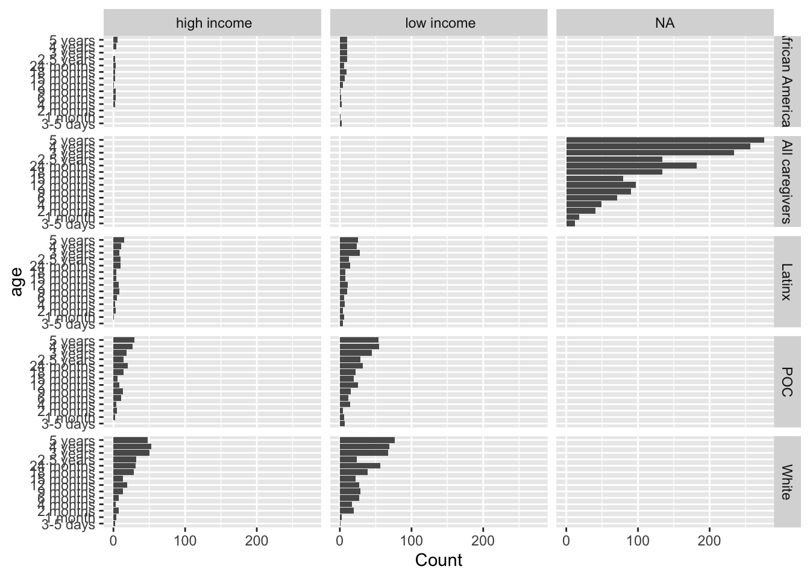
Miss vaccine when miss well-baby
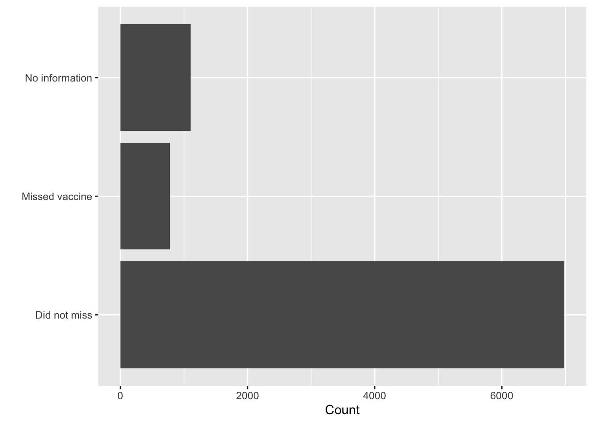
Barriers to healthcare
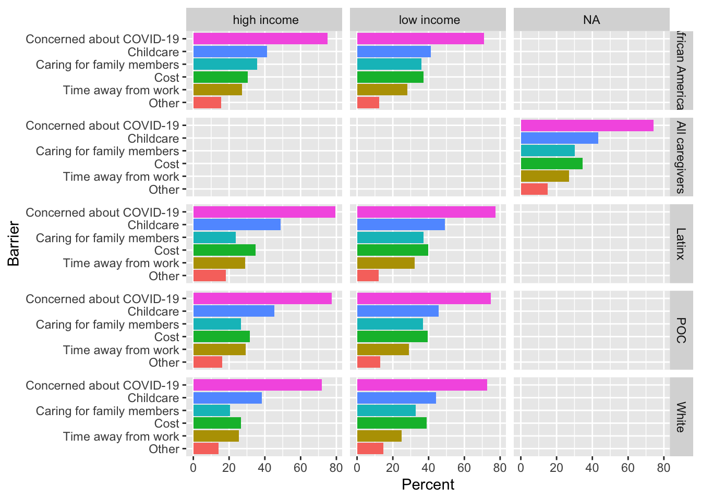
Access to childcare
| Type of childcare | Count | Percent | Count | Percent | Count | Percent |
|---|---|---|---|---|---|---|
| African American, high income | ||||||
| Center-based care | 56 | 32.6 | 14 | 5.8 | -42 | -26.8 |
| Unpaid care by relative/friend/neighbor | 22 | 12.8 | 12 | 5.0 | -10 | -7.8 |
| Paid care by relative/friend/neighbor | 13 | 7.6 | 8 | 3.3 | -5 | -4.3 |
| Home-based paid childcare | 33 | 19.2 | 13 | 5.4 | -20 | -13.8 |
| African American, low income | ||||||
| Center-based care | 100 | 31.9 | 29 | 7.2 | -71 | -24.8 |
| Unpaid care by relative/friend/neighbor | 37 | 11.8 | 16 | 4.0 | -21 | -7.9 |
| Paid care by relative/friend/neighbor | 29 | 9.3 | 15 | 3.7 | -14 | -5.6 |
| Home-based paid childcare | 16 | 5.1 | 6 | 1.5 | -10 | -3.6 |
| All caregivers | ||||||
| Center-based care | 2059 | 29.4 | 568 | 6.4 | -1491 | -23.0 |
| Unpaid care by relative/friend/neighbor | 1072 | 15.3 | 579 | 6.5 | -493 | -8.8 |
| Paid care by relative/friend/neighbor | 576 | 8.2 | 277 | 3.1 | -299 | -5.1 |
| Home-based paid childcare | 544 | 7.8 | 211 | 2.4 | -333 | -5.4 |
| Latinx, high income | ||||||
| Center-based care | 141 | 32.6 | 32 | 5.8 | -109 | -26.8 |
| Unpaid care by relative/friend/neighbor | 59 | 13.7 | 29 | 5.3 | -30 | -8.4 |
| Paid care by relative/friend/neighbor | 42 | 9.7 | 14 | 2.5 | -28 | -7.2 |
| Home-based paid childcare | 38 | 8.8 | 13 | 2.4 | -25 | -6.4 |
| Latinx, low income | ||||||
| Center-based care | 108 | 19.4 | 34 | 4.8 | -74 | -14.5 |
| Unpaid care by relative/friend/neighbor | 63 | 11.3 | 46 | 6.5 | -17 | -4.7 |
| Paid care by relative/friend/neighbor | 47 | 8.4 | 23 | 3.3 | -24 | -5.2 |
| Home-based paid childcare | 25 | 4.5 | 7 | 1.0 | -18 | -3.5 |
| POC, high income | ||||||
| Center-based care | 314 | 33.8 | 70 | 5.9 | -244 | -27.9 |
| Unpaid care by relative/friend/neighbor | 141 | 15.2 | 69 | 5.8 | -72 | -9.4 |
| Paid care by relative/friend/neighbor | 88 | 9.5 | 32 | 2.7 | -56 | -6.8 |
| Home-based paid childcare | 92 | 9.9 | 37 | 3.1 | -55 | -6.8 |
| POC, low income | ||||||
| Center-based care | 272 | 24.1 | 79 | 5.5 | -193 | -18.5 |
| Unpaid care by relative/friend/neighbor | 144 | 12.8 | 89 | 6.2 | -55 | -6.5 |
| Paid care by relative/friend/neighbor | 100 | 8.9 | 48 | 3.4 | -52 | -5.5 |
| Home-based paid childcare | 53 | 4.7 | 18 | 1.3 | -35 | -3.4 |
| White, high income | ||||||
| Center-based care | 827 | 37.0 | 216 | 7.7 | -611 | -29.3 |
| Unpaid care by relative/friend/neighbor | 391 | 17.5 | 195 | 7.0 | -196 | -10.5 |
| Paid care by relative/friend/neighbor | 173 | 7.7 | 92 | 3.3 | -81 | -4.5 |
| Home-based paid childcare | 250 | 11.2 | 76 | 2.7 | -174 | -8.5 |
| White, low income | ||||||
| Center-based care | 350 | 20.5 | 78 | 3.7 | -272 | -16.8 |
| Unpaid care by relative/friend/neighbor | 256 | 15.0 | 124 | 5.9 | -132 | -9.1 |
| Paid care by relative/friend/neighbor | 134 | 7.8 | 48 | 2.3 | -86 | -5.5 |
| Home-based paid childcare | 77 | 4.5 | 35 | 1.7 | -42 | -2.8 |
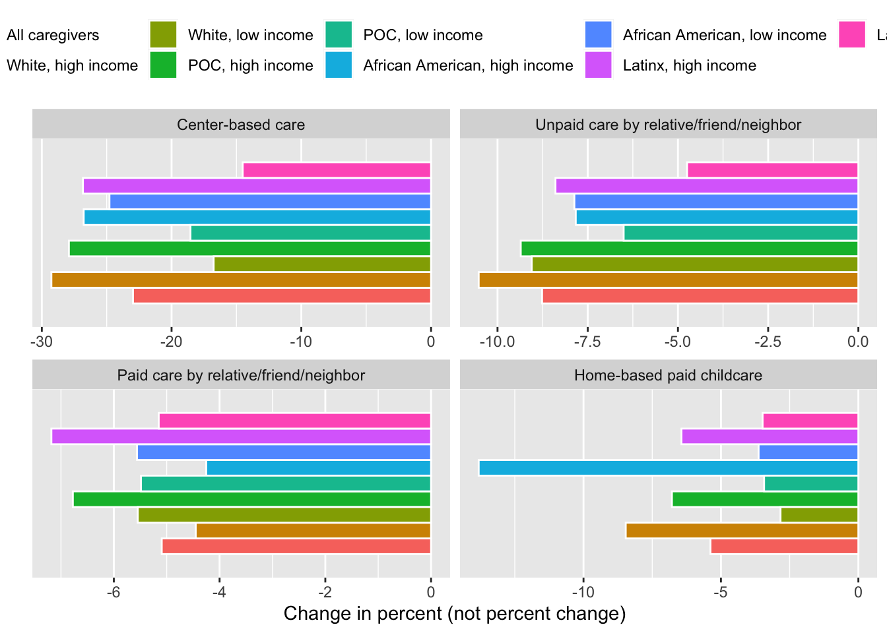
Access to other services or support
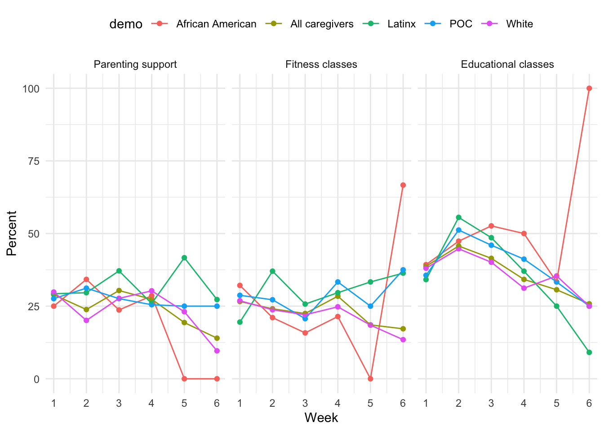
Insurance
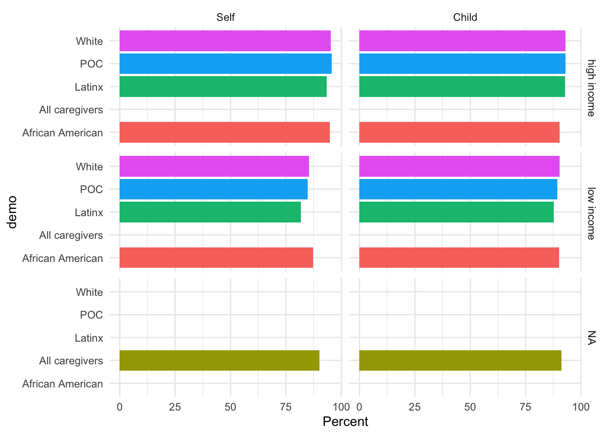
Income
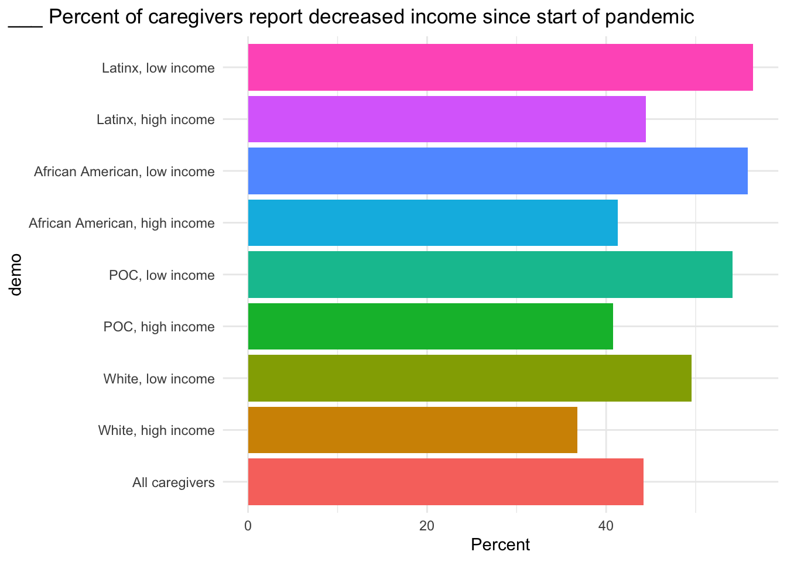
Difficulty paying for basic necessities
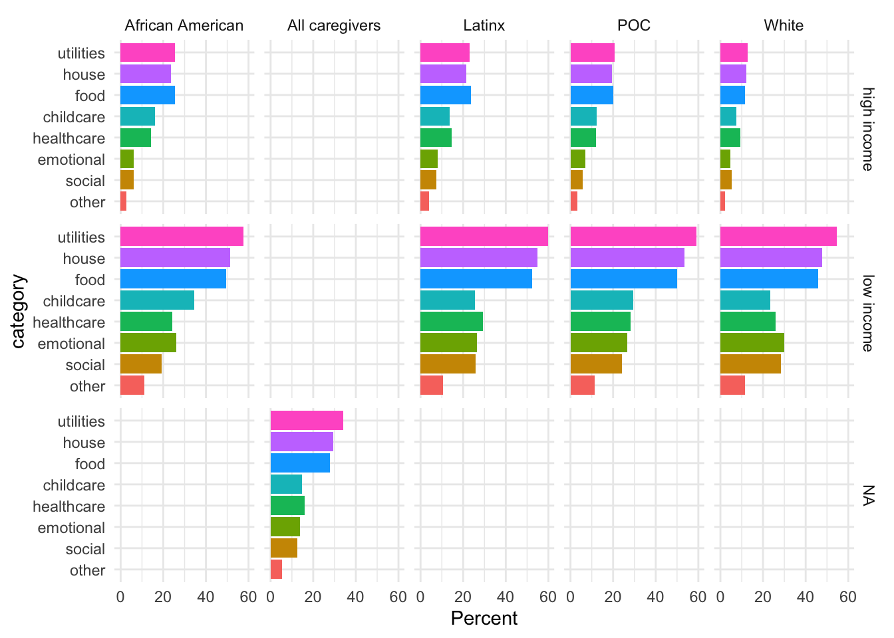
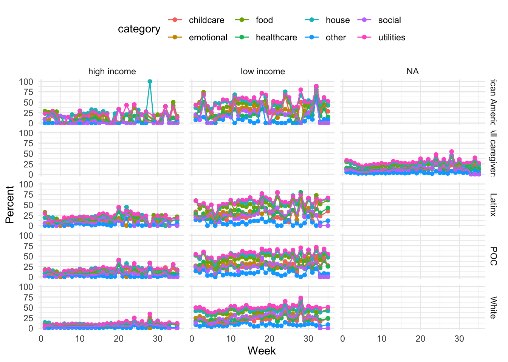
Mental health/ emotional well-being
Anxiety
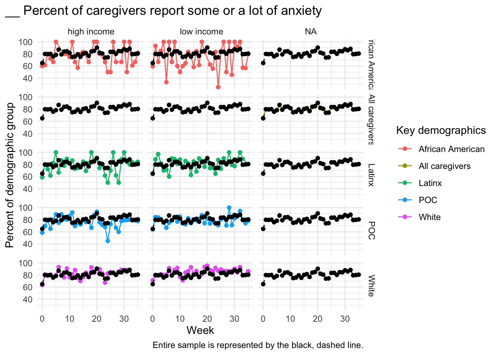
Depression
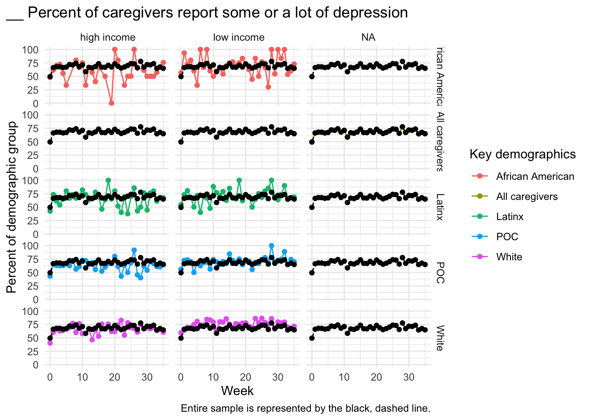
Stress

Loneliness

Child Externalizing
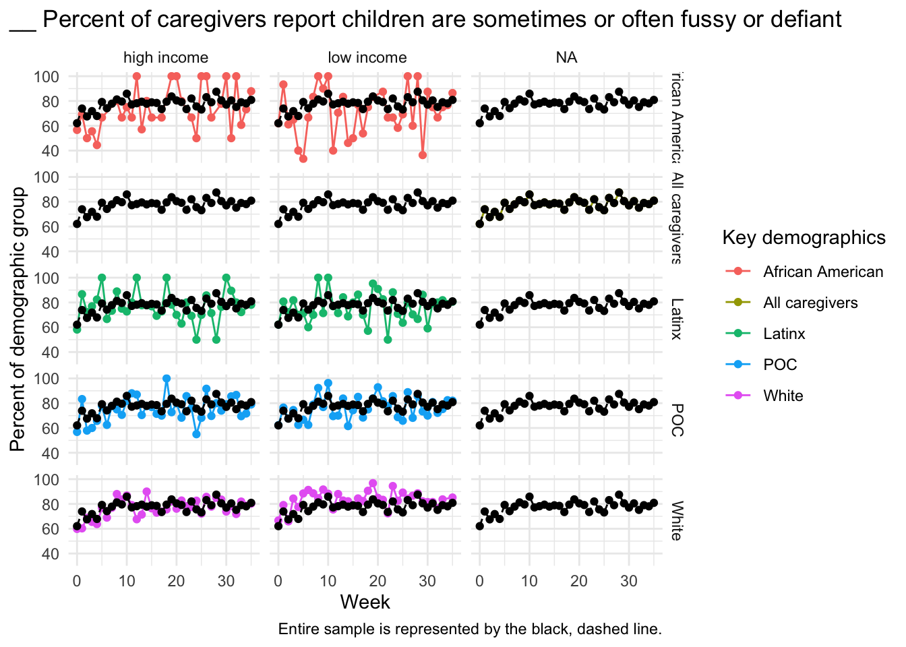
Child Internalizing